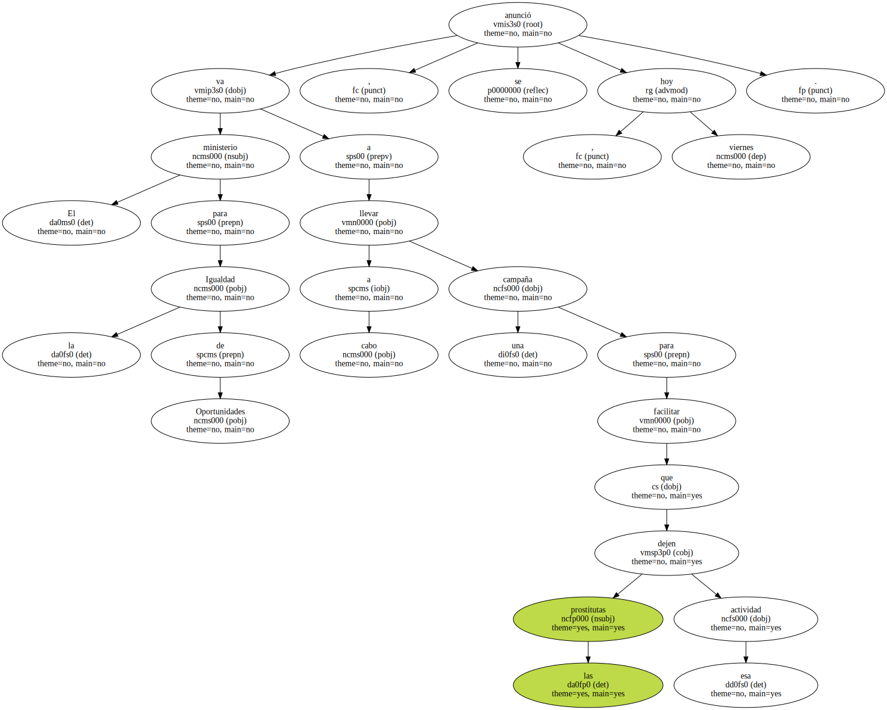
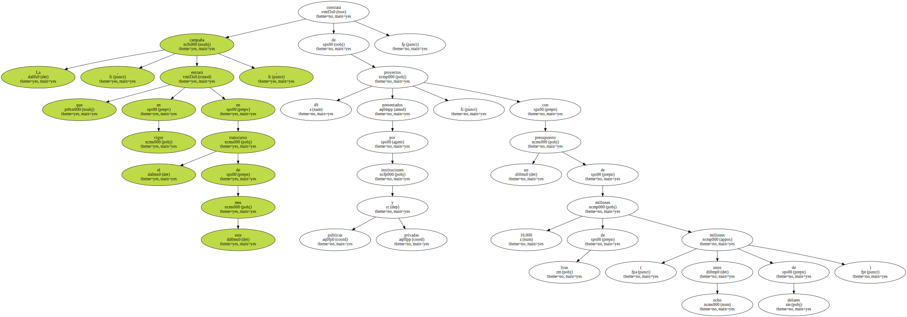
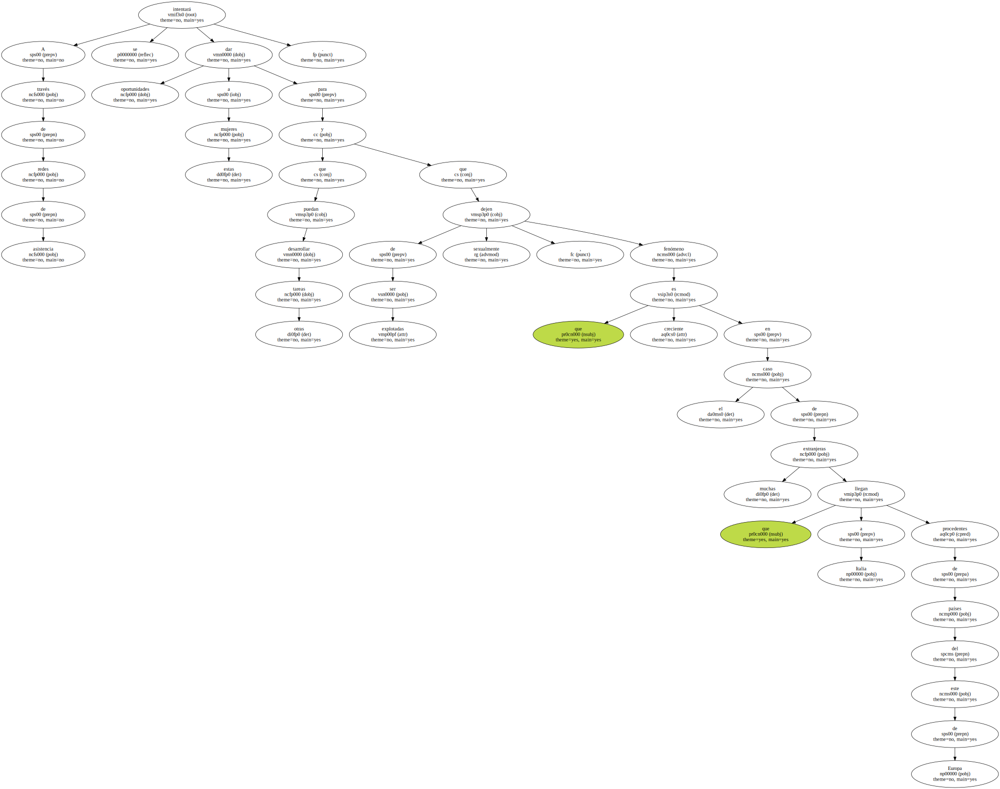
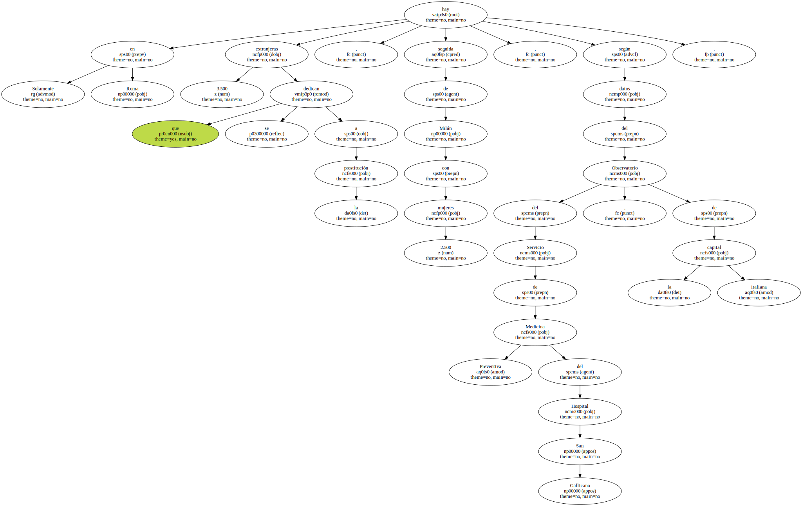
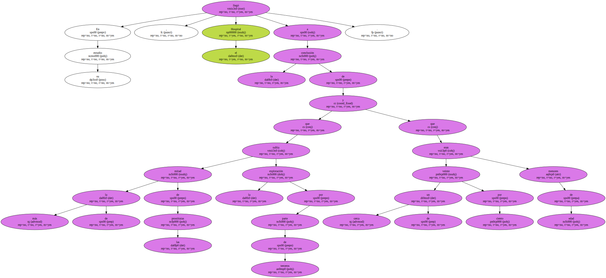
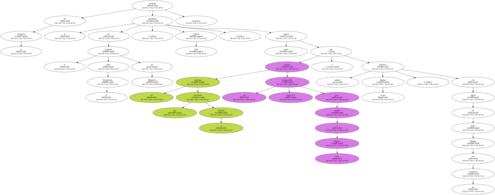

El ministerio para la Igualdad de Oportunidades va a llevar a cabo una campaña para facilitar que las prostitutas dejen esa actividad , se anunció hoy , viernes.
La campaña , que entrará en vigor en el transcurso de este mes , constará de 49 proyectos presentados por instituciones públicas y privadas , con un presupuesto de 16.000 millones de liras ( unos ocho millones de dólares ).
A través de redes de asistencia se intentará dar oportunidades a estas mujeres para que puedan desarrollar otras tareas y que dejen de ser explotadas sexualmente , fenómeno que es creciente en el caso de muchas extranjeras que llegan a Italia procedentes de países del este de Europa.
Solamente en Roma hay 3.500 extranjeras que se dedican a la prostitución , seguida de Milán con 2.500 mujeres , según datos del Observatorio del Servicio de Medicina Preventiva del Hospital San Gallicano , de la capital italiana.
En su estudio , el Hospital llegó a la conclusión de que más de la mitad de las prostitutas sufría la explotación por parte de terceros y que cerca de un veinte por ciento eran menores de edad.
Para facilitar la campaña del Ministerio se pondrá en marcha un número de información , al que podrán llamar las propias prostitutas o quienes deseen ayudarlas y que estará activo las 24 horas del día , según se puso de manifiesto hoy durante un seminario sobre " prostitución y criminalidad " que se celebra en Roma.

En el seminario participó la presidenta de la Comisión sobre la Prostitución del Ministerio , Vittoria Tola , quien explicó que las personas que atenderán el teléfono tendrán una preparación específica para atender a esas mujeres y además hablarán varios idiomas , con objeto de poder dialogar con las extranjeras.
En el caso de este segmento , la campaña prevé la posibilidad de facilitarles el regreso a su país de origen o bien intentar proporcionarles en Italia una colocación estable y la obtención de un permiso legal de residencia.